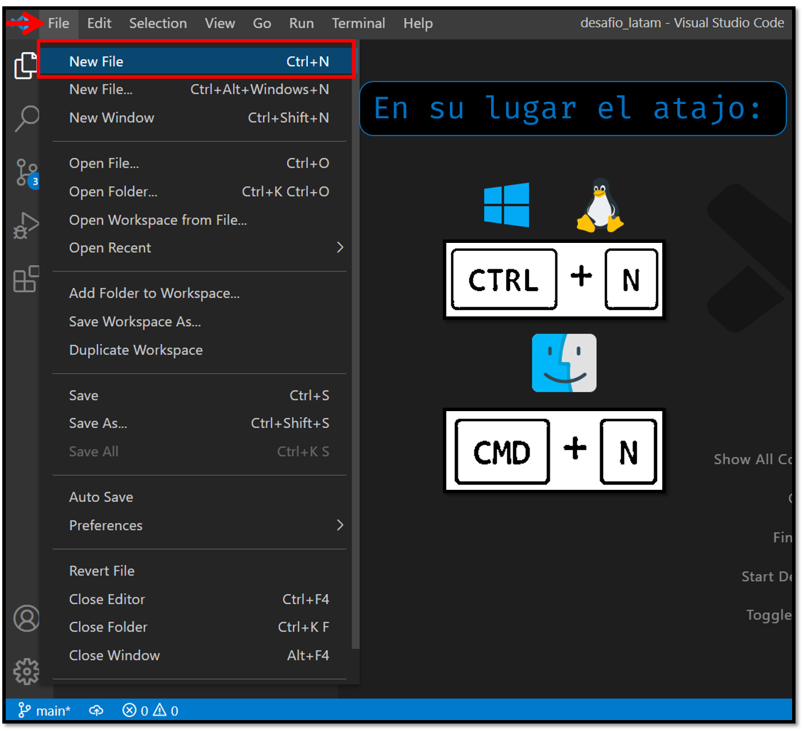
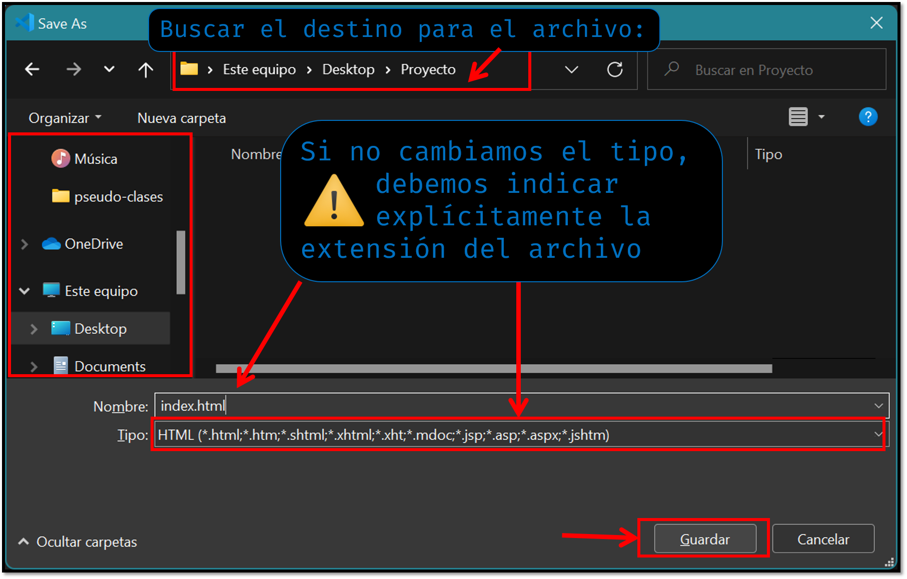
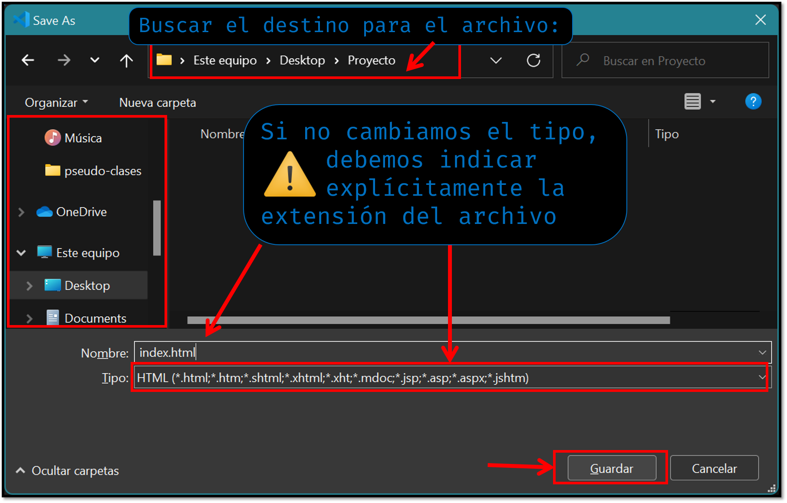
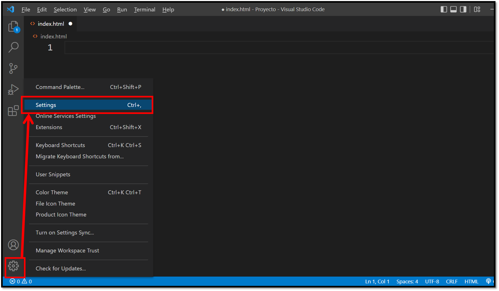
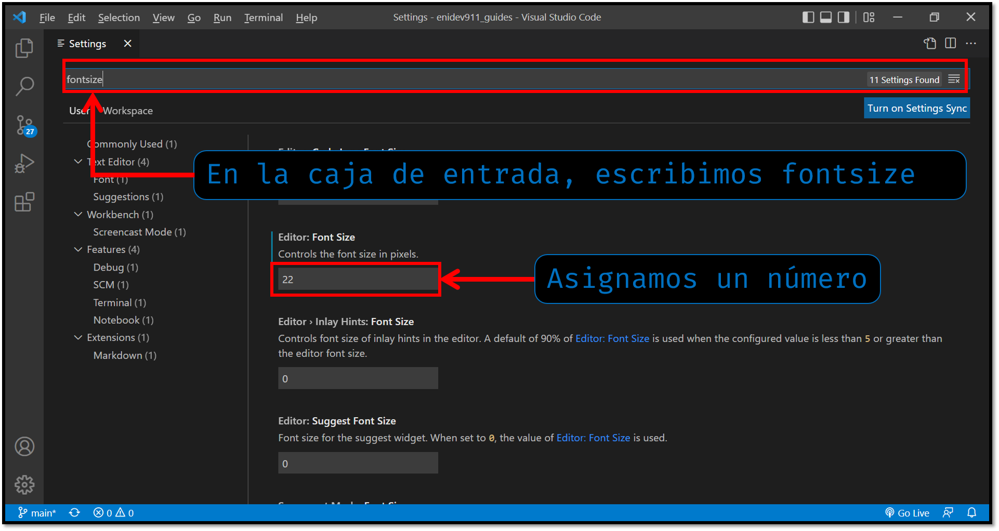
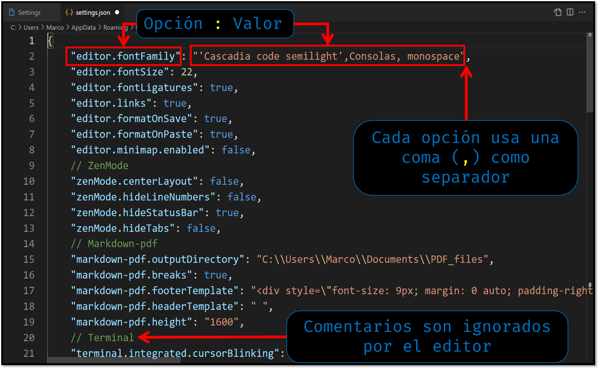
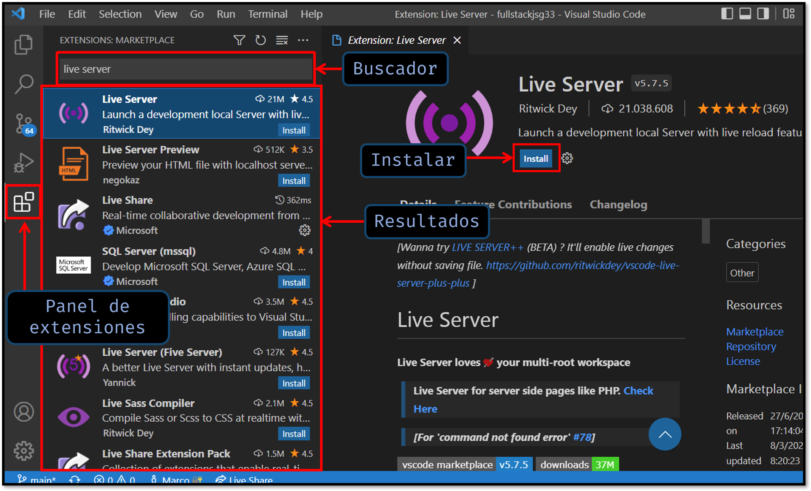
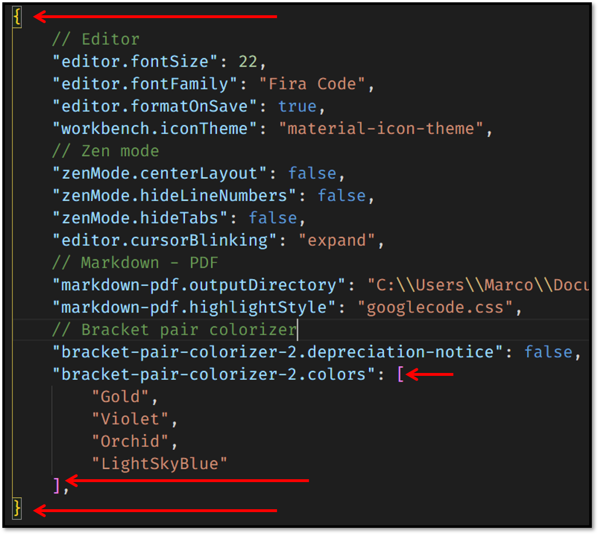
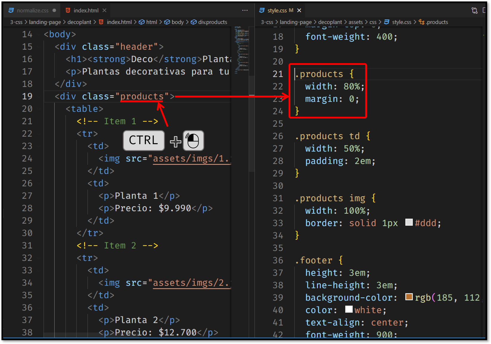

GUÍA BÁSICA DE USO
Contenido
Editor 📋
Manipulando archivos 📁
Atajos de teclado ⌨
Fragmentos (Snippets)
Abrir carpetas en vs code
Tenemos diferentes formas de abrir una carpeta para trabajar en vs code. Veremos las más comunes a cotinuación.
Arrastrando la carpeta del proyecto
Este método es muy sencillo, sólo debes identificar tu proyecto, o crear una nueva carpeta para un proyecto nuevo y cuando ejecutes vs code espera a que se cargue correctamente y luego arrastra la carpeta del proyecto hacia el editor:
Desde el menú de vs code
Se puede abrir un proyecto desde el menú de opciones superior, y se selecciona el el proyecto en cuestión:
Manipulando archivos
Crear un archivo
Desde el menú de opciones de VS Code seleccionamos <<File -> New File...>> o mediante el atajo de teclado CTRL + N :
Guardar un archivo
Para guardar los cambios tenemos la opción <<File -> Save>> o el atajo Ctrl+S :
 

Comportamiento intellisense
Cuando editamos un archivo, vs code por defecto tiene muchas funciones de autocompletado, el comportamiento “intellisense” del editor se muestra cada vez que tipeamos una letra se muestra una ayuda, interpretando lo que podríamos querer hacer.
Configuración
Las configuraciones podemos encontrarlas desde la barra lateral:
Aquí simplemente podemos buscar en la caja de texto cualquier opción que desees modificar.
Ejemplo para cambiar el tamaño de la fuente del editor:
Archivo de configuración
El editor de configuración es la interfaz de usuario que permite revisar y modificar los valores de configuración que se almacenan en un archivo settings.json. Podemos revisar y editar este archivo directamente abriéndolo en el editor con el comando
Abrir desde la barra lateral, las configuraciones:
Dentro podemos modificar algunos parámetros directamente en el archivo JSON, su estructura es muy simple, en la columna izquierda van las opciones y en la derecha se asigna el valor para esa opción:
Ubicación de los archivos de configuración
Dependiendo de la plataforma, el archivo de configuración de usuario de encuentra se puede encontrar en los siguientes paths ( rutas ) :
- Windows:
%APPDATA%\Code\User\settings.json - Mac OS:
$HOME/Library/Application\ Support/Code/User/settings.json - Linux:
$HOME/.config/Code/User/settings.json
El archivo settings.json tiene intelliSense completo con terminaciones inteligentes para configuraciones y valores y descripción flotante. Tambien se resaltan los errores debidos a nombres de configuración o formato JSON incorrecto.
Si prefiere trabajar directamente siempre sobre el archivo settings.json, podemos establecer la siguiente modificación en el archivo de configuración:
"workbench.settings.editor": "json"
A continuación vemos un poco las opciones de diferentes tipos que podemos cambiar:
Formato:
// Formatea el código al pegarlo
"editor.formatOnPaste": true,
// Formatea el código al guardar
"editor.formatOnSave": true,
// Formatea una línea después de escribirla
"editor.formatOnType": true,
Fuentes:
// Tamaño de fuente de 18px
"editor.fontSize": 18,
// Familia de la fuente
"editor.fontFamily": "'Cascadia code', monospace",
// Activa las ligaduras para las fuentes que lo soportan
"editor.fontLigatures": true,
Cursor:
// Estilo del cursor: línea delgada
"editor.cursorStyle": "line-thin",
// Animación del cursor
"editor.cursorBlinking": "blink",
// Oculta la marca del cursor en el editor
"editor.hideCursorInOverviewRuler": true,
Colores:
// Remplaza los colores del editor
"workbench.colorCustomizations": {
// Cambia el color de fondo de la barra de status
"statusBar.background": "#FFD166",
// Cambia el color del primer plano de la barra de status
"statusBar.foreground": "282B39",
// Cambia el color de primer plano que no es afectado por la sintaxis
"editor.foreground": "#ffb191",
// Cambia el color del número de línea del editor
"editorLineNumber.foreground": "#00ff00",
}
Archivos:
// Remueve las líneas extras al final del archivo
"files.trimFinalNewlines": true,
// Inserta una línea al final del archivo
"files.insertFinalNewline": true,
// Remueve los espacios extras al final de una línea
"files.trimTrailingWhitespace": true,
Identación y espaciado:
// Desactiva la identación automática
"editor.detectIdentation": false,
// Desactiva las líneas de indentación
"editor.renderIndentGuides": false,
// Elimina el espaciado
"editor.folding": false,
// Elimina el margen izquierdo (Se usa principalmente para depurar)
"editor.glyphMatgin": false,
Terminal Integrada:
// Tamaño de fuente para la terminal integrada
"terminal.integrated.fontSize": 15,
// Familia de la fuente
"terminal.integrated.fontFamily": "Consolas",
Instalar extensiones
Para instalar extensiones, hacemos clic en el icono de extensiones de la barra de actividades. Se desplegará la barra de actividades mostrando las extensiones recomendas y se encuentran ordenadas por popularidad.

Te dejo una lista de extensiones recomendadas para el desarrollo web:
-
Live Server: configura un servidor local para poder ver el desarrollo en vivo, fácil de usar y recarga la página automáticamente al guardar los cambios en el archivo. (La ilustración de ejemplo anterior lo muestra).
-
IntelliSense for CSS class names in HTML: mapea y detecta la finalización de nombres de clases CSS dentro de una etiqueta HTML en su atributo class en función de las definiciones encontradas en su espacio de trabajo o archivos externos a los que se hace referencia a través la etiqueta <link>
-
Bracket Pair Colorizer 2: A pesar que su mantención está descontinuida es un plugin que yo recomiendo, ya que nos permitirá identificar paréntesis, corchetes o llaves coincidentes, también nos permite configurar los colores para cada pareja.
 -
Css Peek: Esta es una extensión que nos ayuda a identificar las clases IDs en nuestro documento HTML y nos ofrece un menú contextual en el que podemos ver un extracto de los estilos CSS de dichas clases e IDs. Además, si queremos, con tan solo un clic, localizará en nuestra hoja de estilos la clase o ID para poder modificarlo de manera rápida y sencilla. 
Atajos de teclado
Funcionalidad básica
| Combinación | Acción |
|---|---|
| Ctrl+Shift+N | Abre una nueva instancia de visual studio code. |
| Ctrl+N | Crea un nuevo archivo sin guardar. |
| Ctrl+S | Guardar el archivo. |
| Ctrl+Shift+S | Realiza la acción <<Guardar Como>>. |
| Ctrl+O | Abrir un archivo del explorador de archivos. |
| Ctrl+Shift+W | Cerrar la instancia actual de visual studio code. |
| Ctrl+B | Activar/desactivar la visibilidad de la barra lateral. |
| Ctrl+Shift+P | Abre la paleta de comandos. También puede usar f1 |
| Ctrl+Shift+X | Cambiar al panel de extensiones. |
| Ctrl+Shift+E | Cambiar al panel de explorador de archivos. |
| Ctrl+Shift+D | Cambiar al panel de debugging. |
| Ctrl+Shift+G | Cambiar al panel de control de código fuente. |
Selección múltiple y cursores
| Combinación | Acción |
|---|---|
| Ctrl+A | Selecciona todo el texto. |
| Ctrl+L | Selecciona la línea actual. |
| Ctrl+Shift+L | Selecciona todas las instancias de la selección actual. |
| Ctrl+F2 | Selecciona todas las coincidencias de la palabra actual. |
| Ctrl+D | Si vuelve a presionar la combinación se agrega a la selección la siguiente ocurrencia. |
| Shift+Alt+Right | Ampliar la selección |
| Shift+Alt+Left | Reducir la selección |
| Alt+Clic | Insertar un cursor |
| Ctrl+Alt+Up | Insertar cursor encima de la fila actual |
| Ctrl+Alt+Down | Insertar cursor debajo de la fila actual |
| Ctrl+U | Deshacer el último cursor |
Snippets
Los fragmentos de código ( snippets ) son plantillas que facilitan la introducción de patrones de código repetivivos, como bucles, o declaraciones condicionales, También se puede extender su uso para casos personalizados.
En VS Code, los fragmentos aparence en una pequeña ventana emergente intelliSense podemos activar el comportamiento de intelliSense mediante la combinación ( CTRL+SPACE ) donde se mostrará junto con otras sugerencias o en la paleta de comandos ( CTRL+SHIFT+P ) introduciendo ( Insert Snippet) y seleccionarlo. También hay soporte para completar con tabulación habilitando esto desde el archivo de configuración e introduciendo la siguiente entrada clave-valor:
"editor.tabCompletion": "on"
La sintaxis del fragmento sigue la sintaxis de TextMate con algunas excepciones como el uso de \u que no es compatible.
Snippets incorporados
VS Code tiene fragmentos para una serie de lenguajes como: javascript. typescript, Markdown y PHP.
Puede ver los fragmentos disponibles para un lenguaje ejecutando el comando que mencionamos anteriormente Insert Snippet en la paleta de comandos para obtener una lista de los fragmentos para el lenguaje del archivo actual. Sin embargo, tenga en cuenta que en esta lista también se incluye fragmentos que ha definido el usuario y cualquier fragmento proporcionado por las extensiones que ha instalado.
Instalar fragmentos desde Marketplace
Hay muchas extensiones en VS Code Marketplace que incluyen fragmentos. Puede buscar extensiones que contengan fragmentos en la vista de Extensiones (CTRL+SHIFT+X) usando el filtro @category:"snippet"
Crea tus propios fragmentos (snippets)
Se puede definir fácilmente fragmentos sin ninguna extensión. Para crear o editar sus propios fragmentos, seleccione en el menú File -> Preferences -> Configure user snippets y, a continuación seleccione el lenguaje para que el identificador de lenguaje pueda detectarlo y recomendarlo al editar un archivo, o bien seleccione New Global Snippets File... para que este fragmento se encuentre disponible para todos los lenguajes.
Los archivos de fragmentos ( snippets ) están escritos en formato JSON, admite comentarios de estilo C y se pueden definir una cantidad ilimitada de fragmentos. Los fragmentos admiten la mayoría de la sintaxis de TextMate para un comportamiento dinámico, dan formato inteligente a los espacios en blanco según el contexto de inserción y permiten una fácil edición de varias líneas.
A continuación, veremos un ejemplo de un fragmento para un bucle for para javascript.
// in File 'Code/User/snippets/javascript.json'
{
"For Loop": {
"prefix": ["for", "for-const"],
"body": ["for (const ${2:element} of ${1:array}) {", "\t$0", "}"],
"description: "Un bucle for."
}
}En el ejemplo anterior:
- "For Loop" es el nombre del fragmento. Se muestra a través de intelliSense si "description" no se proporciona.